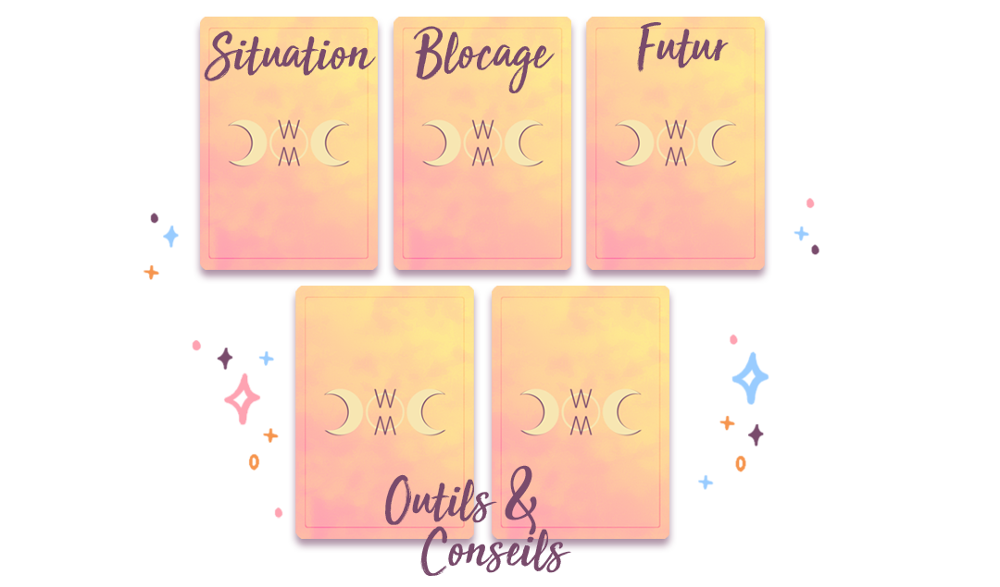

.png)
Un nouveau point de vue sur ta situation pour te permettre d'y voir plus clair, de cibler qu'est-ce qui dans cette situation te bloque et comment dépasser ce blocage. Quels outils sont à ta disposition et que tu dois ici mettre en avant, quelles leçons tu peux tirer de cette situation.
En plus de cette éclairage, je partage avec toi plusieurs outils d'Introspection et réflexion que tu peux faire pour aller plus loin dans l'analyse.
Il s'agit d'une entrevue, donc d'un appel vidéo d'environ 60 min pour qu'on puisse échanger sur ta situation, que je te partage l'interprétation du tirage et discuter ensemble des révélations.✨ Tu peux également me poser tes questions complémentaires et je tirerai d'autres cartes.
En amont tu reçois un mail te demandant des informations complémentaires sur toi et sur la situation que tu veux aborder. Si tu ne le reçois pas tu peux télécharge la marche à suivre disponible après le paiement. On convient ensuite d'un horaire pour réaliser l'entrevue. 🤗
Le tirage est réalisé juste avant l'échange afin que tu puisses avoir la photo du tirage lors de l'entrevue.
Exemple de tirage possible. Je créé sur mesure un tirage qui correspond à ta situation et tire autant de cartes que nécessaire pour t'éclairer et répondre à toutes tes questions.
37€
Lors d'un échange oral d'environ 60 min, nous faisons le point sur une situation qui
te préoccupe et mettons en place des outils pour l'améliorer !🌟

- La vidéo de notre échange pour l'écouter et la revoir quand tu le souhaites, qui contient l'analyse
du tirage ainsi que les outils et réflexions adaptées évoqués lors de l'entrevue.
- La photo du tirage en amont.
En Bonus : des Affirmations Positives sur mesure qu'on construit ensemble.
La vidéo est disponible pendant 1 mois, cependant tu peux la télécharger pour y avoir accès à tout moment.
Si tu préfère une trace écrite, tu peux investir dans le complément d'offre. Il s'agit d'un PDF récapitulatif qui regroupe l'interprétation et les exercices conseillés. 😉
Le Message Global résonne vraiment en moi. Je ne m'attendais pas du tout a avoir quelque chose d'aussi complet,
détaillé, plein de synchronicités. C'est tout ce que je ressens que tu viens de ressortir, c'est vraiment
beau. Je te remercie mille fois.
Johanna a réalisé pour moi un tirage et j'ai été très surprise de voir à quel point cela
correspondait à ce que je vivais. Le matin même j'avais tiré une carte et les deux tirages se faisaient
écho, et resonnaient énormément en moi et avec la pleine lune du jour. Incroyable. J'ai beaucoup aimé la
façon dont Johanna tire les cartes et donne des éclairages. C'était vraiment très pertinent et toujours
bienveillant ! Mille mercis 💗ğŸ™
Alice